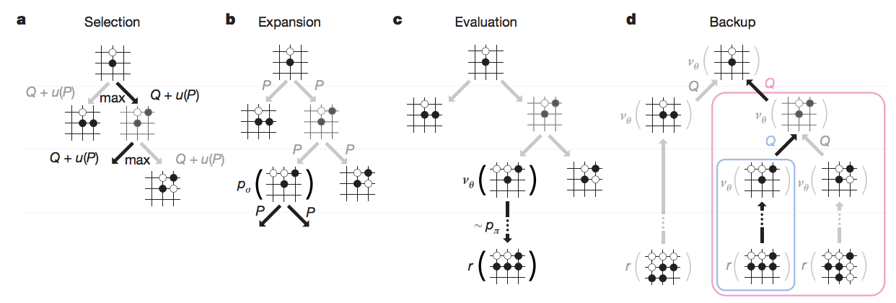

Minimax algorithm
It's when you are trying to maximize your chances of winning on your turn, and your opponent is trying to minimize your chances of winning on their turn.
Monty Hall
It's from TV show, where there are three doors, behind one of which there is a car and two others are empty. You get to choose one of the doors, and then the host will reveal one of the empty doors. Now, you have to decide which is a better option: 1) stay with the door you've chosen first time, or 2) switch to the other one.
Answer: At first, since the car is randomly assigned, all the doors have equal chances of 33.33%, so it doesn't matter which you choose. Once the host (Monty Hall), opens, say, door B as empty, we make an observation which helps us update our prior probability for each door and calculate the posterior probabilities for door A (which let's say we chose at first) and door C. (Note that Monty cannot open the door we chose at first). Posterior probability of door B is,
Now, we might mistakenly think that since there are only two doors left, each will have equal probbaility of 0.5, which is wrong, since this ignores the fact that Monty knowingly reveals an empty door (and will never reveal the door which has the car behind it).
In order to make stay/switch decision, we'd like to know
Using Bayes' theorem, we can calculate this probability as follows,
Here the term
known as likelihood must be 1, since if Monty knows that car is in door C, he has to open door B. The other non-conditional probabilities can be calculated using marginal probability as follows:
Plugging these values back into our Bayes formulation, we'll get
Therefore, switching is an overall better strategy as if you consistently stay you'll have 33.33% chance of winning where if you consistently switch, you'd have 66.67% chance of winning.
Defining Intelligence
Here, we're not dealing with the philosophical definition of intelligence, rather we focus on a more practical definition which can be described as a property of a system. One thing to note is that intelligence is context-based. Humans are intelligence in some tasks and rather dumb in some others. Similarly, an algorithm might be considered intelligent in some tasks but completely dumb in some others. Therefore, task or problem domain is key in designing intelligent systems. We refer to it as environment and the intelligent system as agent. In order to make decision, agent needs to know the state, which is all the information available to it. Once, the agent knows the state, it'll make an action (decision), which may impact the environment.
Classifying Intelligence
One way to classify AI problems is by using environment state. For example, it can be fully-observable or partially-observable (tic tac toe vs poker game) OR it can be deterministic or stochastic OR it can discrete and continuous states. Also, an environment can be benign where there is only one agent or adversarial where there are multiple agents making actions to defeat agent in reaching its goals.
| problem | partially observable | stochastic | continuous | adversarial |
|---|---|---|---|---|
| playing poker | yes | yes | no | yes |
| recognizing handwritten text | no | yes | yes | no |
| driving on the road | yes | yes | yes | no |
| playing chess | no | no | no | yes |
Rational Behavior and Bounded Rationality
One other definition based on rational behavior is that an intelligent agent is one that takes action to maximize its utility given the desired goal. This defines intelligence regardless of the cognition mechanism agent uses to guide its behavior. There is a problem with this definition as it requires agent to behave optimally at all times. Given the constraints and restraints exist in many real-world problems, agents can act optimally. However, we can define the desired goal (bound optimality) for an agent (which takes into account the constraints of the problem). For example, we can design an algorithm to play chess which wins 60% of times.
Solving Sudoku puzzle
Here, we are going to program an AI agent that solves any sudoku puzzle. We'll use constraint propagation and search techniquesin our solution. Constraint propagation is when the constraints in the problem limits the search space.
Setting up the board
Below are the naming conventions we use:
- We label rows by letters: A,B,C,D,E,F,G,H,I
- And columns by numbers 1 to 9
- Each individual cell is referred to as
box - The complete row, column, or 3x3 square is called
unit - For a partical box, say A1,
peersare all other boxes that belong to a common unit (namely, those that belong to the same row, column, or 3x3 square).
To code an agent, we need to first be able to represent the state of the game. We can do it either as string or as dictionary.
The string will consist of a concatenation of all the readings of the digits in the rows, taking the rows from top to bottom. If the puzzle is not solved, we can use a . as a placeholder for an empty box.
The dictionary representation would be keys showing the boxes and the values the digit in each box.
rows = 'ABCDEFGHI' cols = '123456789'
Now, we write a helper function that takes the rows and cols values and returns the key values for all the boxes.
def cross(a, b): return [s+t for s in a for t in b]
Running the above function:
boxes = cross(rows, cols) boxes = ['A1', 'A2', 'A3', 'A4', 'A5', 'A6', 'A7', 'A8', 'A9', 'B1', 'B2', 'B3', 'B4', 'B5', 'B6', 'B7', 'B8', 'B9', 'C1', 'C2', 'C3', 'C4', 'C5', 'C6', 'C7', 'C8', 'C9', 'D1', 'D2', 'D3', 'D4', 'D5', 'D6', 'D7', 'D8', 'D9', 'E1', 'E2', 'E3', 'E4', 'E5', 'E6', 'E7', 'E8', 'E9', 'F1', 'F2', 'F3', 'F4', 'F5', 'F6', 'F7', 'F8', 'F9', 'G1', 'G2', 'G3', 'G4', 'G5', 'G6', 'G7', 'G8', 'G9', 'H1', 'H2', 'H3', 'H4', 'H5', 'H6', 'H7', 'H8', 'H9', 'I1', 'I2', 'I3', 'I4', 'I5', 'I6', 'I7', 'I8', 'I9']
And for the units:
row_units = [cross(r, cols) for r in rows] # Element example: <p class="mume-header " id="-element-example"></p> # row_units[0] = ['A1', 'A2', 'A3', 'A4', 'A5', 'A6', 'A7', 'A8', 'A9'] <p class="mume-header " id="-row_units0--a1-a2-a3-a4-a5-a6-a7-a8-a9"></p> # This is the top most row. <p class="mume-header " id="-this-is-the-top-most-row"></p> column_units = [cross(rows, c) for c in cols] # Element example: <p class="mume-header " id="-element-example-1"></p> # column_units[0] = ['A1', 'B1', 'C1', 'D1', 'E1', 'F1', 'G1', 'H1', 'I1'] <p class="mume-header " id="-column_units0--a1-b1-c1-d1-e1-f1-g1-h1-i1"></p> # This is the left most column. <p class="mume-header " id="-this-is-the-left-most-column"></p> square_units = [cross(rs, cs) for rs in ('ABC','DEF','GHI') for cs in ('123','456','789')] # Element example: <p class="mume-header " id="-element-example-2"></p> # square_units[0] = ['A1', 'A2', 'A3', 'B1', 'B2', 'B3', 'C1', 'C2', 'C3'] <p class="mume-header " id="-square_units0--a1-a2-a3-b1-b2-b3-c1-c2-c3"></p> # This is the top left square. <p class="mume-header " id="-this-is-the-top-left-square"></p> unitlist = row_units + column_units + square_units
Now, we can turn the string representations into dicitonary respresentation. It goes like this:
def grid_values(grid): """Convert grid string into {<box>: <value>} dict with '.' value for empties. Args: grid: Sudoku grid in string form, 81 characters long Returns: Sudoku grid in dictionary form: - keys: Box labels, e.g. 'A1' - values: Value in corresponding box, e.g. '8', or '.' if it is empty. """ rows = 'ABCDEFGHI' cols = '123456789' def cross(a, b): return [s+t for s in a for t in b] boxes = cross(rows, cols) grid_dict = {} for i, value in enumerate(grid): grid_dict[boxes[i]] = value return grid_dict
For the complete code refer to scripts folder.
Strategy 1: Elimination
The first strategy would be to go over all the empty boxes and eliminate the values that can't appear (OR keep all possible values) in that box based on its peers.
Now that we know how to eliminate values, we can take one pass, go over every box that has a value, and eliminate the values that can't appear on the box, based on its peers.
Here is my code for elimination
def eliminate(values): """Eliminate values from peers of each box with a single value. Go through all the boxes, and whenever there is a box with a single value, eliminate this value from the set of values of all its peers. Args: values: Sudoku in dictionary form. Returns: Resulting Sudoku in dictionary form after eliminating values. """ rows = 'ABCDEFGHI' cols = '123456789' def cross(a, b): return [s+t for s in a for t in b] row_units = [cross(r, cols) for r in rows] column_units = [cross(rows, c) for c in cols] square_units = [cross(rs, cs) for rs in ('ABC','DEF','GHI') for cs in ('123','456','789')] for k, v in values.items(): if len(v) == 1: row_peers = row_units[rows.find(k[0])] col_peers = column_units[int(k[1])-1] square_peers = square_units[square_units.index([lst for lst in square_units if k in lst][0])] for key in row_peers: if len(values[key]) > 1: values[key] = values[key].replace(str(v), '') for key in col_peers: if len(values[key]) > 1: values[key] = values[key].replace(str(v), '') for key in square_peers: if len(values[key]) > 1: values[key] = values[key].replace(str(v), '') return values
Strategy 2: Only Choice
If there is only one box in a unit which would allow a certain digit, then that box must be assigned that digit.
Here is the code snippet for only_choice:
def only_choice(values): """Finalize all values that are the only choice for a unit. Go through all the units, and whenever there is a unit with a value that only fits in one box, assign the value to this box. Input: Sudoku in dictionary form. Output: Resulting Sudoku in dictionary form after filling in only choices. """ for unit in unitlist: for digit in '123456789': dplaces = [box for box in unit if digit in values[box]] if len(dplaces) == 1: values[dplaces[0]] = digit return values
Constraint Propagation
Constraint Propagation is all about using local constraints in a space (in the case of Sudoku, the constraints of each square) to dramatically reduce the search space. As we enforce each constraint, we see how it introduces new constraints for other parts of the board that can help us further reduce the number of possibilities.
Some other famous AI problems Constraint Propagation helps to solve:
- Map coloring: In the map coloring problem, we must find a way to color the map such that no two adjacent items share the same color.
- Crypto-Arithmetic Puzzles: In "TWO + TWO = FOUR", what digits T,W,O,F,U,R represent? In Crypto-Arithmetic puzzles, each letter represents a digit, and no two letters represent the same digit. None of the numbers start with a leading zero. Our goal is to find a mapping from letters to digits that satisfies the equations. Here again, we'll find that the constraints imposed by the equation allow us to create an intelligent algorithm to solve the problem via Constraint Propagation.
Applying Constraint Propagation to Sudoku
We combine the functions eliminate and only_choice to write the function reduce_puzzle, which receives as input an unsolved puzzle and applies our two constraints repeatedly in an attempt to solve it.
Some things to watch out for:
- The function needs to stop if the puzzle gets solved.
- What if the function doesn't solve the sudoku? Can we make sure the function quits when applying the two strategies stops making progress?
Here is the code snippet:
from utils import * def reduce_puzzle(values): """ Iterate eliminate() and only_choice(). If at some point, there is a box with no available values, return False. If the sudoku is solved, return the sudoku. If after an iteration of both functions, the sudoku remains the same, return the sudoku. Input: A sudoku in dictionary form. Output: The resulting sudoku in dictionary form. """ stalled = False while not stalled: # Check how many boxes have a determined value solved_values_before = len([box for box in values.keys() if len(values[box]) == 1]) # Use the Eliminate Strategy values = eliminate(values) # Use the Only Choice Strategy values = only_choice(values) # Check how many boxes have a determined value, to compare solved_values_after = len([box for box in values.keys() if len(values[box]) == 1]) # If no new values were added, stop the loop. stalled = solved_values_before == solved_values_after # Sanity check, return False if there is a box with zero available values: if len([box for box in values.keys() if len(values[box]) == 0]): return False return values
The utils module is as follows:
rows = 'ABCDEFGHI' cols = '123456789' def cross(a, b): return [s+t for s in a for t in b] boxes = cross(rows, cols) row_units = [cross(r, cols) for r in rows] column_units = [cross(rows, c) for c in cols] square_units = [cross(rs, cs) for rs in ('ABC','DEF','GHI') for cs in ('123','456','789')] unitlist = row_units + column_units + square_units units = dict((s, [u for u in unitlist if s in u]) for s in boxes) peers = dict((s, set(sum(units[s],[]))-set([s])) for s in boxes) def display(values): """ Display the values as a 2-D grid. Input: The sudoku in dictionary form Output: None """ width = 1+max(len(values[s]) for s in boxes) line = '+'.join(['-'*(width*3)]*3) for r in rows: print(''.join(values[r+c].center(width)+('|' if c in '36' else '') for c in cols)) if r in 'CF': print(line) return def grid_values(grid): """ Convert grid into a dict of {square: char} with '123456789' for empties. Input: A grid in string form. Output: A grid in dictionary form Keys: The boxes, e.g., 'A1' Values: The value in each box, e.g., '8'. If the box has no value, then the value will be '123456789'. """ chars = [] digits = '123456789' for c in grid: if c in digits: chars.append(c) if c == '.': chars.append(digits) assert len(chars) == 81 return dict(zip(boxes, chars)) def eliminate(values): """ Go through all the boxes, and whenever there is a box with a value, eliminate this value from the values of all its peers. Input: A sudoku in dictionary form. Output: The resulting sudoku in dictionary form. """ solved_values = [box for box in values.keys() if len(values[box]) == 1] for box in solved_values: digit = values[box] for peer in peers[box]: values[peer] = values[peer].replace(digit,'') return values def only_choice(values): """ Go through all the units, and whenever there is a unit with a value that only fits in one box, assign the value to this box. Input: A sudoku in dictionary form. Output: The resulting sudoku in dictionary form. """ for unit in unitlist: for digit in '123456789': dplaces = [box for box in unit if digit in values[box]] if len(dplaces) == 1: values[dplaces[0]] = digit return values
Harder Sudoku
Let's say our sudoku puzzle is like this:
grid2 = '4.....8.5.3..........7......2.....6.....8.4......1.......6.3.7.5..2.....1.4......' values = grid_values(grid2)
We find that our algorithm can't solve the puzzle.
Strategy 3: Search
Search is used throughout AI from Game-Playing to Route Planning to efficiently find solutions.

Simply speaking, here the search strategy means to pick a box with a minimal number of possible values and try to solve each of the puzzles obtained by choosing each of these values, recursively.
Depth-First Search
It is an algorithm for traversing or searching tree or graph data structures. The algorithm starts at the root node (selecting some arbitrary node as the root node in the case of a graph) and explores as far as possible along each branch before backtracking. The output should be the string obtained by the labels in the order you've traversed the tree.
Below is the code snippet for search function,
def search(values): "Using depth-first search and propagation, try all possible values." # First, reduce the puzzle using the previous function values = reduce_puzzle(values) if values is False: return False ## Failed earlier if all(len(values[s]) == 1 for s in boxes): return values ## Solved! # Choose one of the unfilled squares with the fewest possibilities n,s = min((len(values[s]), s) for s in boxes if len(values[s]) > 1) # Now use recurrence to solve each one of the resulting sudokus, and for value in values[s]: new_sudoku = values.copy() new_sudoku[s] = value attempt = search(new_sudoku) if attempt: return attempt